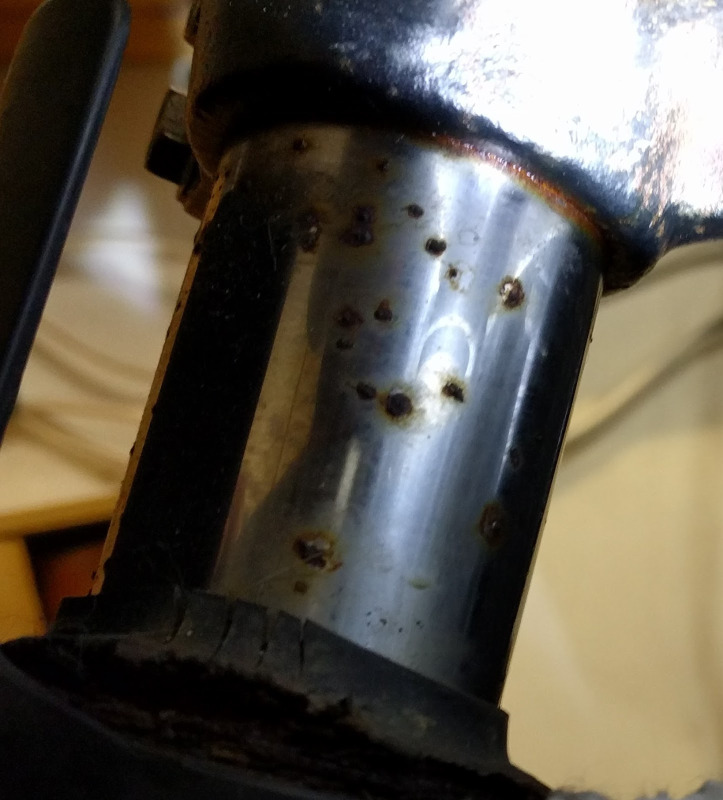
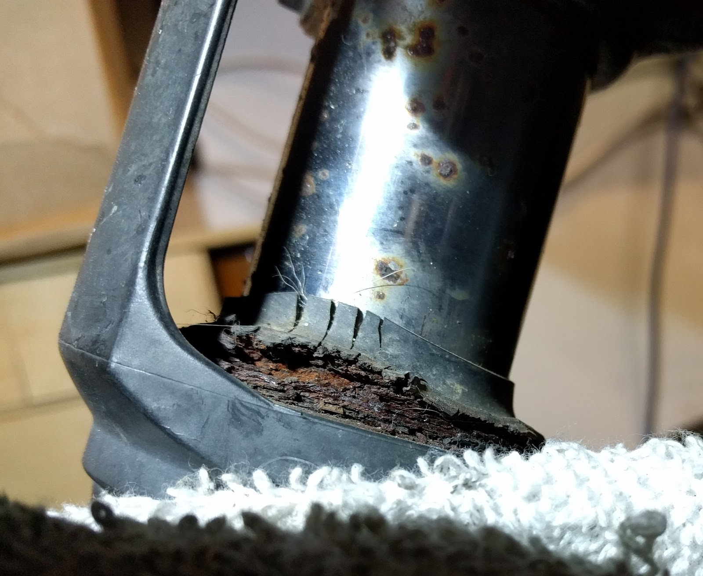
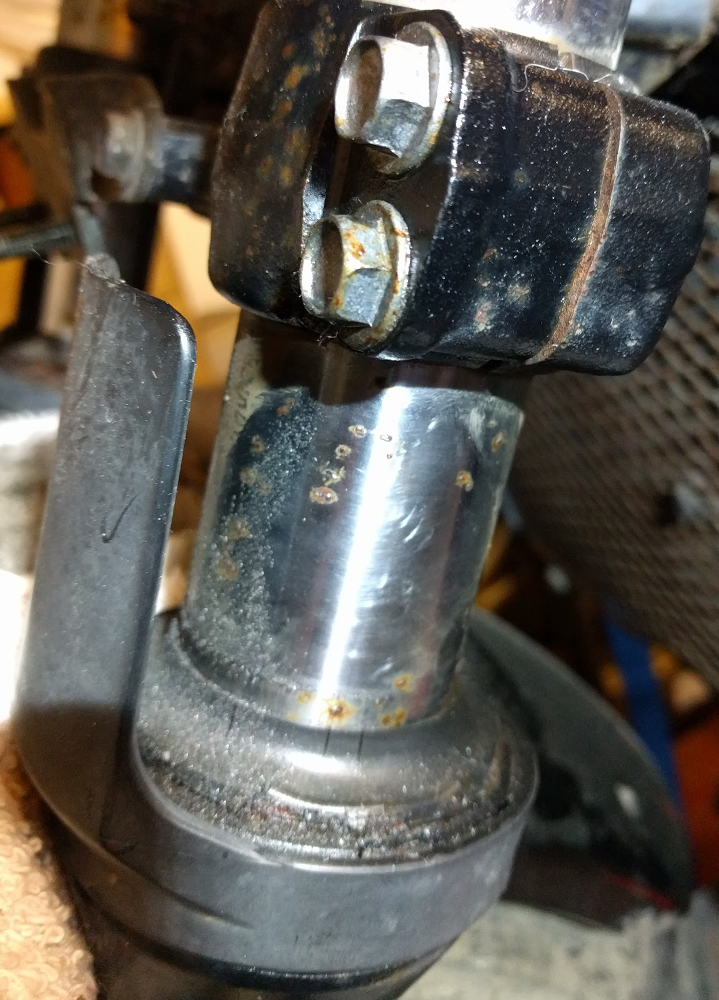

Project Z750 part 20
So, I’ve ordered new caliper pistons and new fork stanchions. I had a look at the forks and they are really bad. way too bad to even consider trying to clean up with wet and dry.
I’ve tried to capture some of the pitting in these photos:




the seals are in a really bad way too, so I need a complete set of seals, new oil and the new stanchions. of course I’m not sure I will actually change the stanchions myself or get a mobile mechanic to do it, but once I’ve got the bits, I can decide.
while I’m waiting for the bits to arrive, I decided to get the front end ready and do some more cleaning (as it will need quite a bit before I’m happy with it).
taking the front fairing off would have been fairly easy if not for one of the nuts at the bottom (there are two). these two nuts are screwed onto threaded rod that seems to be welded onto a little carrier between the forks. one of the nuts came off fine, but the other nut started spinning without actually coming off the threaded rod. I turned it and turned it, but it was going nowhere.
If it had been seized, fine I could have used wd40 and heat to free it, but I didn’t understand why it would turn but not come off. Eventually I decided the only way I was going to get it off was with my trusty dremel, so I put a cutting blade on it and cut the nut down. once I had cut enough of the nut away, I used a large screwdriver and hammer and managed to get the nut off. Of course I have ruined the threaded rod, but I guess I’ll have to drill that out and replace it with a bolt.
no job ever goes smoothly. something has to go wrong. it seems that that is just a law of nature. but it’s done now and the front fairing is off which means I now have access to the top of the forks and fork clamps.
next I have to work out how to set the bike up so that the front wheel is off the ground.